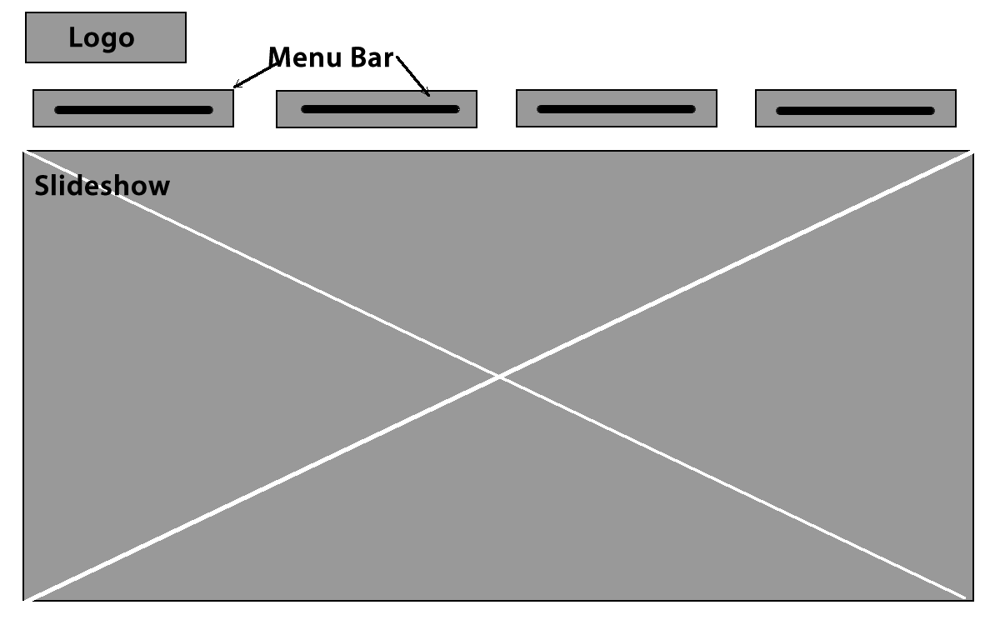
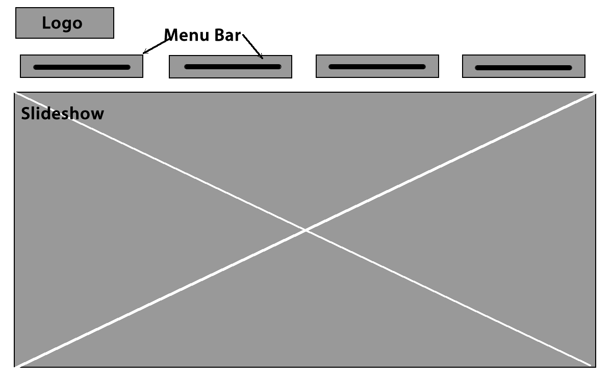
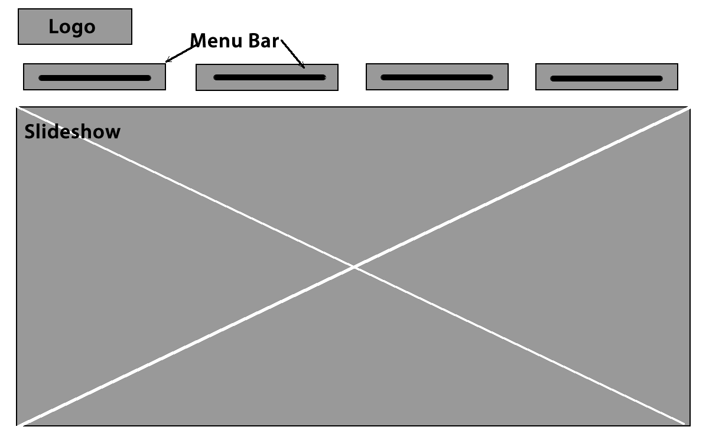

We created a few ideas of the homepage after creating our flowchart. We referenced a lot from other websites. We made wireframes to give the client an idea of the layout of the website and where the content goes.

We chose to use the third wireframe because we want the menu bar to stand out a bit more, because it is our call to action.
This is the storyboard I made in Fireworks.